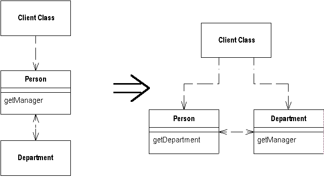

Remove Middle Man
A class is doing too much simple delegation.
Get the client to call the delegate directly.

For more information see page
160
of
Refactoring
| Refactoring Home |
| Alphabetical List |